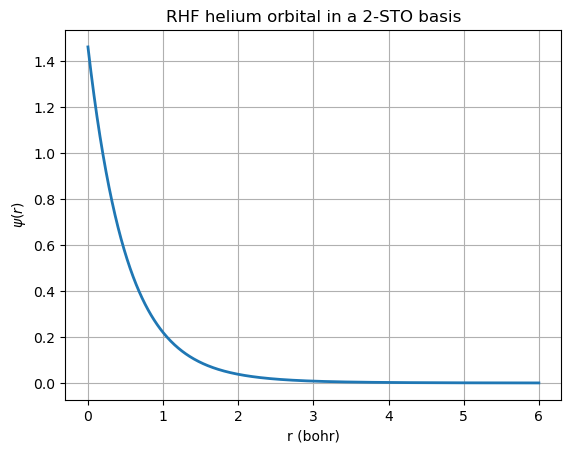
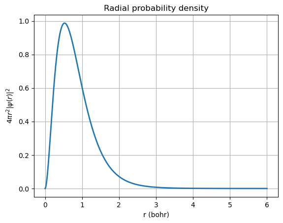

Hartree–Fock for the Helium Atom (RHF) — general form + worked STO example#
These notes finish the missing “general Hartree–Fock solution” for the helium atom and end with a worked restricted Hartree–Fock (RHF) example in a 2-function Slater-type orbital (STO-1s) basis.
We consider the Born–Oppenheimer electronic Hamiltonian (atomic units) for a nucleus of charge (Z) at the origin: [ \hat H = \sum_{i=1}^{2}\left(-\frac{1}{2}\nabla_i^2 - \frac{Z}{r_i}\right) + \frac{1}{r_{12}}. ]
Helium corresponds to (Z=2).
1. RHF ansatz for a two-electron closed-shell atom#
For He in its ground state, we use a closed-shell (restricted) Slater determinant built from one spatial orbital (\psi(\mathbf r)) occupied by two electrons with opposite spin: [ \chi_1(\mathbf x) = \psi(\mathbf r)\alpha(\omega),\qquad \chi_2(\mathbf x) = \psi(\mathbf r)\beta(\omega), ] and [ \Psi(\mathbf x_1,\mathbf x_2) = \frac{1}{\sqrt{2}}
]
This automatically enforces antisymmetry under exchange of the two electrons.
Energy in RHF form#
Define the one-electron operator [ h = -\frac12\nabla^2 - \frac{Z}{r}. ] Then, for a closed-shell two-electron atom, [ E = 2\langle \psi|h|\psi\rangle + J[\psi], ] where the Coulomb (Hartree) self-repulsion is [ J[\psi] = \iint \frac{|\psi(\mathbf r_1)|^2|\psi(\mathbf r_2)|^2}{r_{12}},d\mathbf r_1,d\mathbf r_2. ]
There is no exchange term in the total energy for helium’s closed-shell determinant because the two electrons have opposite spin (the exchange contribution cancels for opposite-spin pairs).
2. Roothaan form (basis expansion) and SCF equation#
Expand the spatial orbital in a finite basis \(\{\phi_\mu\}\):
Define matrices/tensors:
Overlap: \(S_{\mu\nu}=\langle \phi_\mu|\phi_\nu\rangle\)
Core Hamiltonian: \(H_{\mu\nu}=\langle \phi_\mu|h|\phi_\nu\rangle\)
Two-electron repulsion integrals:
For RHF, define the (closed-shell) density matrix
The Fock matrix is
The Roothaan–Hall equations are the generalized eigenvalue problem
which must be solved self-consistently because (F) depends on (\mathbf c) through (P).
3. Worked example: two 1s STO basis functions on the nucleus#
We use normalized 1s Slater-type orbitals (STOs)
We choose a 2-function basis:
Analytic integrals for same-center 1s STOs#
Let \(a,b,c,d\) index 1s STOs with exponents \(\zeta_a,\zeta_b,\zeta_c,\zeta_d\), and define
Overlap
Kinetic
Nuclear attraction
Two-electron repulsion
Below we implement RHF-SCF using these closed forms.
import numpy as np
def S_sto_1s(zeta_a, zeta_b):
# overlap for normalized 1s STOs
return 8.0*(zeta_a*zeta_b)**1.5 / (zeta_a+zeta_b)**3
def T_sto_1s(zeta_a, zeta_b):
# kinetic for normalized 1s STOs
return 4.0*(zeta_a*zeta_b)**2.5 / (zeta_a+zeta_b)**3
def V_sto_1s(zeta_a, zeta_b, Z):
# nuclear attraction for normalized 1s STOs: <a| -Z/r |b>
return -4.0*Z*(zeta_a*zeta_b)**1.5 / (zeta_a+zeta_b)**2
def ERI_sto_1s(zeta_a, zeta_b, zeta_c, zeta_d):
# (ab|cd) for same-center 1s STOs
p = zeta_a + zeta_b
q = zeta_c + zeta_d
num = (p**2 + 3*p*q + q**2)
den = (p**2 * q**2 * (p+q)**3)
pref = 16.0*(zeta_a*zeta_b*zeta_c*zeta_d)**1.5
return pref * num / den
def build_integrals(zetas, Z):
M = len(zetas)
S = np.zeros((M,M))
H = np.zeros((M,M))
eri = np.zeros((M,M,M,M))
for a in range(M):
for b in range(M):
za, zb = zetas[a], zetas[b]
S[a,b] = S_sto_1s(za, zb)
H[a,b] = T_sto_1s(za, zb) + V_sto_1s(za, zb, Z)
for a in range(M):
for b in range(M):
for c in range(M):
for d in range(M):
eri[a,b,c,d] = ERI_sto_1s(zetas[a], zetas[b], zetas[c], zetas[d])
return S, H, eri
def symmetric_orthogonalization(S):
# S^{-1/2} via eigen-decomposition
w, U = np.linalg.eigh(S)
if np.any(w <= 1e-12):
raise ValueError("Overlap matrix is singular/ill-conditioned.")
return U @ np.diag(w**-0.5) @ U.T
def build_fock(H, eri, P):
# F_{μν} = H_{μν} + Σ_{λσ} P_{λσ} [ (μν|λσ) - 1/2 (μλ|νσ) ]
M = H.shape[0]
F = H.copy()
for mu in range(M):
for nu in range(M):
g = 0.0
for lam in range(M):
for sig in range(M):
g += P[lam, sig] * (eri[mu,nu,lam,sig] - 0.5*eri[mu,lam,nu,sig])
F[mu,nu] += g
return F
def rhf_scf_helium(zetas, Z=2.0, max_iter=100, conv=1e-10, verbose=True):
S, H, eri = build_integrals(zetas, Z)
X = symmetric_orthogonalization(S)
# initial guess from the core Hamiltonian (H)
Fp = X.T @ H @ X
eps, Cp = np.linalg.eigh(Fp)
C = X @ Cp
c = C[:, 0:1] # lowest-energy MO
P = 2.0*(c @ c.T) # closed-shell density
E_old = None
for it in range(1, max_iter+1):
F = build_fock(H, eri, P)
Fp = X.T @ F @ X
eps, Cp = np.linalg.eigh(Fp)
C = X @ Cp
c = C[:, 0:1]
P_new = 2.0*(c @ c.T)
# RHF total energy (no nuclear repulsion for an atom):
# E = 1/2 * sum_{μν} P_{μν} (H_{μν} + F_{μν})
E = 0.5*np.sum(P_new*(H + F))
dP = np.linalg.norm(P_new - P)
if verbose:
print(f"iter {it:2d}: E = {E:+.12f} ||dP|| = {dP:.3e}")
if E_old is not None and abs(E - E_old) < conv and dP < 1e-8:
return E, eps[0], c.flatten(), S, H, eri, F
E_old = E
P = P_new
raise RuntimeError("SCF did not converge within max_iter.")
# --- Choose a 2-STO basis ---
Z = 2.0
zeta1 = 1.0
zeta2 = 2.0
zetas = [zeta1, zeta2]
E, eps0, c, S, H, eri, F = rhf_scf_helium(zetas, Z=Z, verbose=True)
print("\nConverged results")
print("-----------------")
print(f"Total RHF energy (Hartree): {E:+.10f}")
print(f"Orbital energy epsilon_1 (Hartree): {eps0:+.10f}")
print(f"MO coefficients c (in STO basis): {c}")
print(f"Check normalization c^T S c = {c @ (S @ c):.12f}")
iter 1: E = -3.374908312333 ||dP|| = 6.286e-01
iter 2: E = -3.398986582651 ||dP|| = 3.844e-02
iter 3: E = -3.400594368171 ||dP|| = 2.361e-03
iter 4: E = -3.400693669905 ||dP|| = 1.450e-04
iter 5: E = -3.400699771158 ||dP|| = 8.907e-06
iter 6: E = -3.400700145908 ||dP|| = 5.471e-07
iter 7: E = -3.400700168925 ||dP|| = 3.360e-08
iter 8: E = -3.400700170339 ||dP|| = 2.064e-09
iter 9: E = -3.400700170426 ||dP|| = 1.268e-10
Converged results
-----------------
Total RHF energy (Hartree): -3.4007001704
Orbital energy epsilon_1 (Hartree): -1.4144858415
MO coefficients c (in STO basis): [0.1660462 0.85673256]
Check normalization c^T S c = 1.000000000000
4. Plot the resulting RHF orbital and radial probability#
The normalized spatial orbital is [ \psi(r)=\sum_{\mu=1}^2 c_\mu \phi_\mu(r). ]
We plot:
(\psi(r))
(P(r)=4\pi r^2|\psi(r)|^2)
import matplotlib.pyplot as plt
def phi_sto_1s_r(r, zeta):
# normalized 1s STO value as a function of r (1s is spherically symmetric)
N = (zeta**3/np.pi)**0.5
return N*np.exp(-zeta*r)
r = np.linspace(0.0, 6.0, 600)
psi = c[0]*phi_sto_1s_r(r, zeta1) + c[1]*phi_sto_1s_r(r, zeta2)
P_r = 4*np.pi*r**2*psi**2
plt.figure()
plt.plot(r, psi, lw=2)
plt.xlabel("r (bohr)")
plt.ylabel(r"$\psi(r)$")
plt.title("RHF helium orbital in a 2-STO basis")
plt.grid(True)
plt.show()
plt.figure()
plt.plot(r, P_r, lw=2)
plt.xlabel("r (bohr)")
plt.ylabel(r"$4\pi r^2|\psi(r)|^2$")
plt.title("Radial probability density")
plt.grid(True)
plt.show()


5. Things to try#
Change the exponents (\zeta_1,\zeta_2) and see how the RHF energy changes.
Increase the basis size to 3–4 STOs.
Compare the RHF energy to the simple variational (single (\zeta)) product result from your earlier Helium notes.
Reference values (for context only):
Exact nonrelativistic ground-state energy of He: (\approx -2.9037) Hartree.
RHF limit energy is higher (less negative) because Hartree–Fock neglects electron correlation.